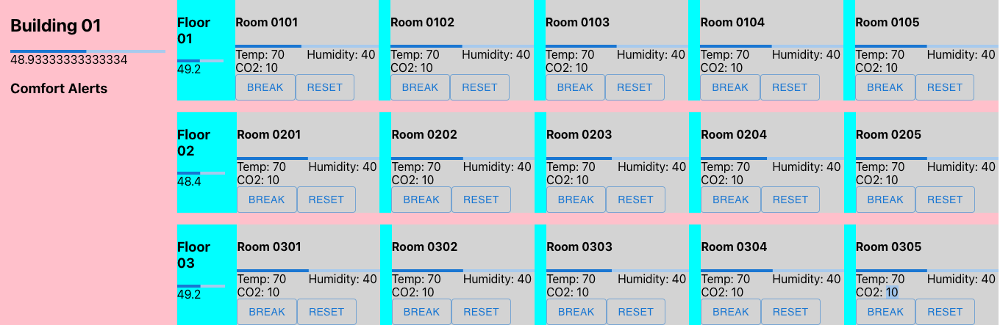

Building Comfort
Prerequisites
- Drasi CLI
- A dev environment with Node.js 18.
- Python 3.8 or higher.
- An Azure Subscription with permissions to create resources.
- Azure CLI 2.40 or higher.
- Azure Functions Core Tools 4.0 or higher.
- A Kubernetes cluster with Project Drasi deployed.
- A clone of the Project Drasi Git repository on your local machine.
Overview of the app
This application illustrates the use of Project Drasi for a hypothetical building management scenario, including:
- The use of Continuous Queries over a Cosmos Gremlin database.
- Continuous Queries that include aggregations across hierarchical graph data.
- The use of the Gremlin Reaction to update a Gremlin database based on the output of a Continuous Query.
- The use of the SignalR Reaction to integrate Continuous Query output with a React JS Application.
In this sample, Continuous Queries are used to calculate a comfort level metric for building management. This is a human-centric measurement that combines the physical measurements in a room such as temperature, humidity, and CO2 levels into a perceptual rating of its comfort. For the purposes of this sample, the comfort level will be calculated dynamically for a room from the physical measurements using the simplified formula:
comfortLevel = trunc(50+(temp-72) + (humidity-42) + if( CO2 > 500,(CO2 - 500)/25,0))
A range of 40 to 50 is considered acceptable: a value below 40 indicates that temperature and/or humidity is too low, while a value above 50 indicates that temperature, humidity, and/or CO2 levels are too high.
The app will provide a dashboard frontend to visualize the comfort levels of rooms and floors, as well as a way to change the environment measurements in the database to simulate changes in the building environment. The dashboard will also show alerts for rooms, floors, and the building when the comfort level is out of range, where the aggregated comfort levels for the floors and building are calculated from the average comfort levels of the rooms and floors respectively by Reactions.
App Architecture
This app consists of:
- A Source getting changes to building environment data from Cosmos DB.
- Several Continuous Queries that calculate comfort levels and alerts for the rooms, as well as aggregate values for the floors and building as a whole.
- A Gremlin Reaction that updates the Cosmos DB database with the calculated comfort levels and aggregate values based on changes in the room environment measurements.
- A SignalR Reaction that receives changes and forwards them to any connected front end clients.
- An Azure Function App that provides HTTP endpoints for the demo app to directly change the environment values in the database.
- A React frontend that invokes updates via the Function App and listens for changes via the SignalR reaction.
Deploying the App
1. Set up the sample data provider
From the apps/building-comfort/devops/azure-resources folder, use the Azure CLI to deploy cosmosdb.bicep:
az login # If you are not already logged in
az deployment group create -f cosmosdb.bicep --resource-group <your resource group> -p cosmosAccountName=<your account name>
Fill in the name of the resource group you want deploy the demo (you will need to create a new resource group first if you don’t already have one), and a name of your choice for the Cosmos DB account. For example:
az deployment group create -f cosmosdb.bicep --resource-group my-resource-group -p cosmosAccountName=my-drasi-db
The bicep deployment will create a new CosmosDb account with the Gremlin API enabled and a database named Contoso with an empty Facilities graph.
Populate the sample data
Copy the following into a config.py file under apps/building-comfort/devops/data and edit the cosmosUri and cosmosPassword values to match your created Cosmos DB account.
cosmosUri = "wss://my-drasi-db.gremlin.cosmos.azure.com:443/"
cosmosUserName = "/dbs/Contoso/colls/Facilities"
cosmosPassword = "xxx...xxx"
buildingCount = 1
floorCount = 3
roomCount = 5
defaultRoomTemp = 70
defaultRoomHumidity = 40
defaultRoomCo2 = 10
You can find the values for the cosmosUri and cosmosPassword in the Azure portal under your Cosmos DB account or by using the Azure CLI:
# For the cosmosUri, you can use the gremlinEndpoint returned by:
COSMOS_DB_ID=$(az cosmosdb show -n my-drasi-db -g my-resource-group --query id -o tsv)
az resource show --id "$COSMOS_DB_ID" --query properties.gremlinEndpoint -o tsv
# For the cosmosPassword, you can use the primaryMasterKey returned by:
az cosmosdb keys list --name my-drasi-db --resource-group my-resource-group --type keys --query primaryMasterKey -o tsv
Once you have the config.py file, you can run the load_graph.py script in the same directory to populate the graph with sample data:
pip install gremlinpython # If you don't already have the gremlinpython package installed
python load_graph.py
2. Deploy the Drasi components
Deploy the sources
Currently, we are unable to create a Kubernetes Secret using the Drasi CLI, so it needs to be manaually created using kubectl. Navigate to your CosmosDB account in the Azure Portal. You will need to retrieve the value of PRIMARY CONNECTION STRING from the Keys blade. Run the following command to create the secrets:
kubectl create secret generic comfy-creds --from-literal=accountEndpoint='${PRIMARY CONNECTION STRING}'
You can also look up the SourceAccountEndpoint value in the Azure portal or by using the Azure CLI:
az cosmosdb keys list --name my-drasi-db -g my-resource-group --type connection-strings --query "connectionStrings[?contains(description, 'Primary Gremlin Connection String')].[connectionString]" -o tsv
From the apps/building-comfort/devops/reactive-graph folder, apply the source-facilities.yaml file with the drasi CLI to your cluster:
drasi apply -f source-facilities.yaml
Deploy the queries
From the apps/building-comfort/devops/reactive-graph folder, use the drasi CLI to deploy the continuous queries:
drasi apply -f query-alert.yaml
drasi apply -f query-comfort-calc.yaml
drasi apply -f query-ui.yaml
Breaking down the Continuous Queries specified in each file:
-
query-alert.yamlspecifies the queries that detect when the comfort level in a room, a floor, or the whole building is outside the acceptable range of 40-50. -
query-comfort-calc.yamlspecifies the queries that calculate the comfort level for each room based on the temperature, humidity, and CO2 levels as described in the overview. It also specifies queries to aggregate the comfort level for each floor based on its rooms, and for the building based on its floors. -
query-ui.yamlquery gets the relevant properties and the relationships between rooms, floors and the building for visualization in the frontend React app.
Deploy the reactions
To deploy the gremlin reaction, we need to create another secret using kubectl to specify your Gremlin graph in the Cosmos DB instance:
kubectl create secret generic comfy-creds --from-literal=DatabaseHost=${DatabaseHost} --from-literal=DatabasePrimaryKey='${DatabasePrimaryKey}'
DatabaseHostwith the host DNS name for the Gremlin endpoint. This is the same as thecosmosUriinconfig.pywithout thewss://prefix or the port number.DatabasePrimaryKeywith the primary key, same as thecosmosPasswordinconfig.py.
Apply the reaction-gremlin.yaml file and the reaction-signalr.yaml file with the drasi CLI to your cluster:
drasi apply -f reaction-gremlin.yaml
drasi apply -f reaction-signalr.yaml
The Gremlin Reaction is used to update the graph in Cosmos DB with the latest comfort level for each room, floor, and building. The SignalR Reaction is used to send the updates of the UI query to the frontend React app.
To connect the React app to the SignalR Reaction, forward the gateway port for the SignalR reaction to a port on your local machine:
kubectl port-forward services/signalr-building-gateway 5001:8080 -n default
3. Run the demo backend and frontend
Configure and start the backend Functions App for updating the data
From the apps/building-comfort/functions folder, create a file named local.settings.json and paste the following content with the appropriate FACILITIES_URL (same as the cosmosUri value) and FACILITIES_KEY (same as the cosmosPassword) value.
{
"IsEncrypted": false,
"Values": {
"FUNCTIONS_WORKER_RUNTIME": "node",
"FACILITIES_DB_NAME": "Contoso",
"FACILITIES_CNT_NAME": "Facilities",
"FACILITIES_URL": "wss://my-drasi-db.gremlin.cosmos.azure.com:443/",
"FACILITIES_KEY": "xxx...xxx",
},
"Host": {
"LocalHttpPort": 7071
}
}
Install the dependencies and run the Functions app locally:
npm install
npm start -- --javascript
Configure and start the frontend React app
From the apps/building-comfort/app folder, edit the config.json file to specify the local URLs for your deployment:
{
"crudApiUrl": "http://localhost:7071", // LocalHttpPort of the backend Functions app
"signalRUrl": "http://localhost:5001/hub", // Kubectl port-forward of SignalR reaction
...
}
Install the dependencies and run the React app locally:
npm install
npm start
The front-end should launch at http://localhost:3000 by default.
NOTE: If you are experiencing issues with CORS policy (e.g. clicking a button and not seeing any changes), you can follow this workaround solution:
- Install Chrome
- In a terminal, execute the following line:
open /Applications/Google\ Chrome.app --args --user-data-dir="/var/tmp/chrome-dev-disabled-security" --disable-web-security --disable-site-isolation-trials
- Navigate to
localhost:3000
Using the frontend app

The UI shows the measured levels of temperature, humidity, and CO2 levels in each room, and the comfort level calculated from those values for each room, floor, and the building. Any alerts for rooms, floors, of the building are show under Comfort Alerts on the left, for example:
You can use the buttons associated with each room to change the temperature, humidity, and CO2 levels in each room, and see the comfort level and alerts update in real time:
-
The
BREAKbutton sets the temperature to 40, humidity to 20, and CO2 to 700, which will result in a room comfort level outside the acceptable range of 40-50. It will set each property individually with a slight delay between them to simulate a real scenario and show the how the comfort level calculations done by the Continuous Queries are affected in real time. -
The
RESETbutton sets the temperature to 70, humidity to 40, and CO2 to 10, which will restore the room to an acceptable comfort level. As with theBREAKbutton, it will set each property individually with a slight delay between them.